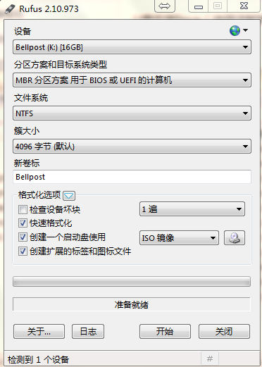
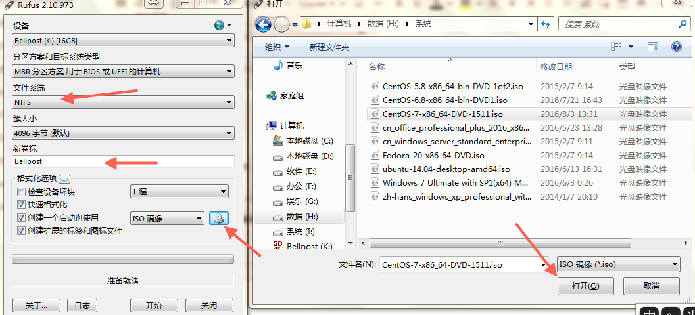

详细讲解U盘制作启动盘安装Linux
导语：制作启动盘的方法有很多，现介绍下面一款软件的使用过程。
下载
下载类似老毛桃的工具。linux安装老毛桃等PE软件不适用。下面我使用的是rufus，很轻量的一款启动盘制作工具，可以制作引导linux和windows等镜像。
下载路径如下：
http://rufus.akeo.ie/downloads/
运行界面
在windows上点击运行rufus-2.17.exe。界面如下：

制作步骤
- 选择要制作启动盘的U盘设备，分区方案可选MBR分区和GPT方案，一般默认即可。
- 选择文件系统FAT32、NTFS等文件系统，选择合适的即可，默认FAT32。
- 填写新U盘的名字（卷标）。
- 勾选格式化选项，第2-3项需要勾选，可直接默认。在创建启动盘后面，选择”iso”镜像，点击类光驱的图标，选中需要制作启动盘的linux iso镜像，如果想使用windows可以选择MS-IOS镜像，应该没有PE功能强大，还未使用过。
- 点击开始，等待格式化及写入完成即可。

到此结束！
本文标题：详细讲解U盘制作启动盘安装Linux
文章作者：bellpost
发布时间：2020-07-16
最后更新：2020-07-16
原始链接：https://bellpost@github.io/2020/07/16/U-disk-install-linux/
版权声明：本博客所有文章除特别声明外，均采用 CC BY-NC-SA 3.0 CN 许可协议。转载请注明出处！